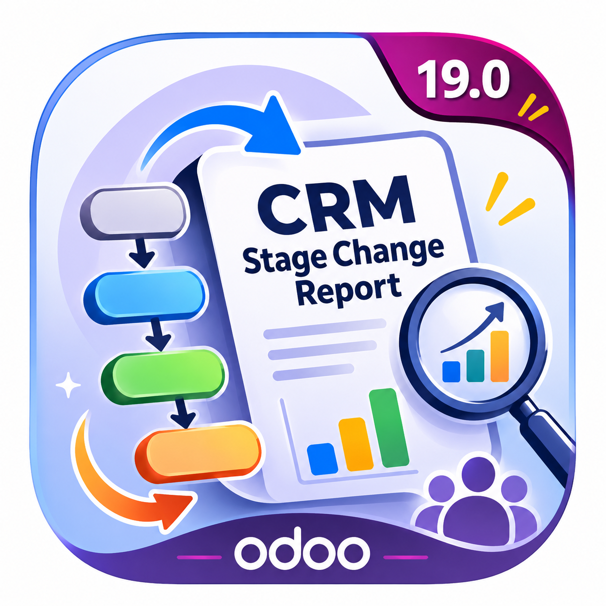

ODOO 19 | CRM REPORTING
Review recorded opportunity stage changes in one table.
Choose a date range, narrow the results by customer, company or stage, and generate a report from existing CRM chatter history. Select the columns you need, then print the report or download it as PDF or Excel.
Calendar date filters Multiple customers PDF and Excel Column selectionOpen CRM > Reporting > Stage Changes.
The report is available to authorized CRM sales users. It uses their active companies and record access permissions.
01 / CHOOSE YOUR FILTERS
Use the calendar buttons to choose From and To dates. Select a company, add one or more customers, or filter by From Stage and To Stage. Leave optional filters blank to keep the broader selection.
02 / GENERATE THE REPORT
Load the recorded stage changes for your selection. Results are grouped by customer and lead, with the newest changes first within each lead. If you change a filter, click Get Report again to refresh the generated results.
03 / REVIEW AND CUSTOMIZE
Search the generated report, move between result pages, or change the rows per page. Open the three-dot menu beside the change count to hide or restore columns. All columns are selected by default; at least one must remain visible.
04 / PRINT OR DOWNLOAD
Print the generated results or download PDF and Excel files. Hidden columns are omitted from each output, including both Excel data sheets. Print and exports use the searched result set, not only the currently displayed page.
Choose dates with Odoo's native calendar picker rather than typing. The report displays dates as DD/MM/YYYY.
Find customers through autocomplete or Search More. Add multiple customers, remove individual selections or clear them all. Selected tags scroll within a fixed-height area.
Repeated Customer, Company, Salesperson, From Stage, To Stage and Chatter Author values merge only within the same lead, not across different leads for one customer.
See the opportunity's current Expected Closing date immediately after Salesperson. The cell stays blank when no date is set.
The workbook contains a merged Stage Changes sheet, an unmerged Data sheet for filtering and a Notes sheet explaining the report. Both data sheets respect selected columns.
Click a Lead / Opportunity name in the on-screen table to open its CRM record and review the underlying opportunity.
Use the three-dot menu to include only the columns needed for your report.
| Column | What it shows |
|---|---|
| Lead / Opportunity | Current opportunity name, linked to the record on screen. |
| Customer (current) | The customer currently assigned to the opportunity. |
| Company (current) | The opportunity's current company. |
| Salesperson (current) | The salesperson currently assigned to the opportunity. |
| Expected Closing | The current expected closing date, if set. |
| From Stage | The previous stage recorded in the tracked change. |
| To Stage | The new stage recorded in the tracked change. |
| Changed At | The recorded change timestamp, displayed in the user's timezone. |
| Chatter Author | The author associated with the chatter message. This is not guaranteed to identify the user who performed the stage update. |
crm_stage_report in your configured addons path.xlsxwriter in the environment running Odoo.crm, web and mail.After a module update, restart Odoo and upgrade the module so Python changes, database fields and report templates are loaded.